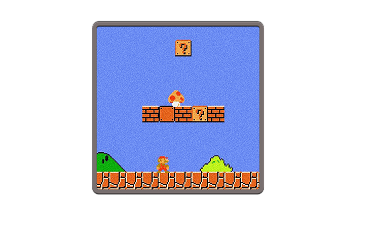
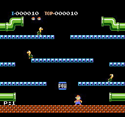

PERIODO DIGITALE - L’EVOLUZIONE DEI PIXEL
MARIO BROS
Prima di Mario, i videogiochi erano spesso schermate fisse e sfide di punteggio. Con il capolavoro di Shigeru Miyamoto, il mondo digitale è diventato un’avventura a scorrimento orizzontale. Per la prima volta, i giocatori non stavano solo "giocando", stavano compiendo un viaggio attraverso il Regno dei Funghi per salvare la Principessa Peach.
IL DESIGN DELL'INVISIBILE
La genialità di Super Mario Bros. risiede nel suo primo livello (il leggendario Mondo 1-1). Senza leggere un manuale, il giocatore imparava tutto:
- Il primo Goomba:Insegnava che toccare i nemici era pericoloso.
- Il fungo (Power-up):Insegnava che alcuni oggetti ti rendevano più forte, trasformando il piccolo Mario in Super Mario.
- I Tubi e i Blocchi:Insegnavano l'esplorazione e la ricerca di segreti nascosti.



UN SALTO NELLA STORIA
Mario non era un soldato o un pilota spaziale, ma un idraulico italo-americano con cappello e baffi. Questa scelta non fu solo estetica:
- I Baffi:Servivano a rendere visibile il naso con i pochi pixel a disposizione.
- Il Cappello: Evitava di dover animare i capelli durante i salti.
- La Salopette:Aiutavano a distinguere il movimento delle braccia rispetto al corpo. Questi limiti tecnici hanno creato l'icona più riconoscibile della storia del gaming, superando in popolarità persino Topolino negli anni '90.

LA COLONNA SONORA DI UNA GENERAZIONE
Non si può parlare di Mario senza menzionare la musica di Koji Kondo. Il tema principale ("Ground Theme") è probabilmente la melodia videoludica più famosa al mondo. È un ritmo calypso/jazz che si adatta perfettamente al movimento del personaggio, rendendo l'esperienza di gioco un balletto sincronizzato tra dita e schermo.